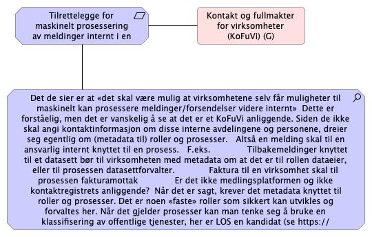

KoFuVi
(
)

Tilrettelegge for maskinelt prosessering av meldinger internt i en virksomhet
Kontakt og fullmakter for virksomheter (KoFuVi) (G)
Det de sier er at «det skal være mulig at virksomhetene selv får muligheter til maskinelt kan prosessere meldinger/forsendelser videre internt» Dette er forståelig, men det er vanskelig å se at det er et KoFuVi anliggende. Siden de ikke skal angi kontaktinformasjon om disse interne avdelingene og personene, dreier seg egentlig om (metadata til) roller og prosesser. Altså en melding skal til en ansvarlig internt knyttet til en prosess. F.eks. Tilbakemeldinger knyttet til et datasett bør til virksomheten med metadata om at det er til rollen dataeier, eller til prosessen datasettforvalter. Faktura til en virksomhet skal til prosessen fakturamottak Er det ikke medlingsplatformen og ikke kontaktregistrets anliggende? Når det er sagt, krever det metadata knyttet til roller og prosesser. Det er noen «faste» roller som sikkert kan utvikles og forvaltes her. Når det gjelder prosesser kan man tenke seg å bruke en klassifisering av offentlige tjenester, her er LOS en kandidat (se https://doc.difi.no/los/) – en felles terminologi for å beskrive offentlige tjenester og ressurser.
Tilrettelegge for maskinelt prosessering av meldinger internt i en virksomhet
Kontakt og fullmakter for virksomheter (KoFuVi) (G)
Det de sier er at «det skal være mulig at virksomhetene selv får muligheter til maskinelt kan prosessere meldinger/forsendelser videre internt» Dette er forståelig, men det er vanskelig å se at det er et KoFuVi anliggende. Siden de ikke skal angi kontaktinformasjon om disse interne avdelingene og personene, dreier seg egentlig om (metadata til) roller og prosesser. Altså en melding skal til en ansvarlig internt knyttet til en prosess. F.eks. Tilbakemeldinger knyttet til et datasett bør til virksomheten med metadata om at det er til rollen dataeier, eller til prosessen datasettforvalter. Faktura til en virksomhet skal til prosessen fakturamottak Er det ikke medlingsplatformen og ikke kontaktregistrets anliggende? Når det er sagt, krever det metadata knyttet til roller og prosesser. Det er noen «faste» roller som sikkert kan utvikles og forvaltes her. Når det gjelder prosesser kan man tenke seg å bruke en klassifisering av offentlige tjenester, her er LOS en kandidat (se https://doc.difi.no/los/) – en felles terminologi for å beskrive offentlige tjenester og ressurser.
Tilrettelegge for maskinelt prosessering av meldinger internt i en virksomhet